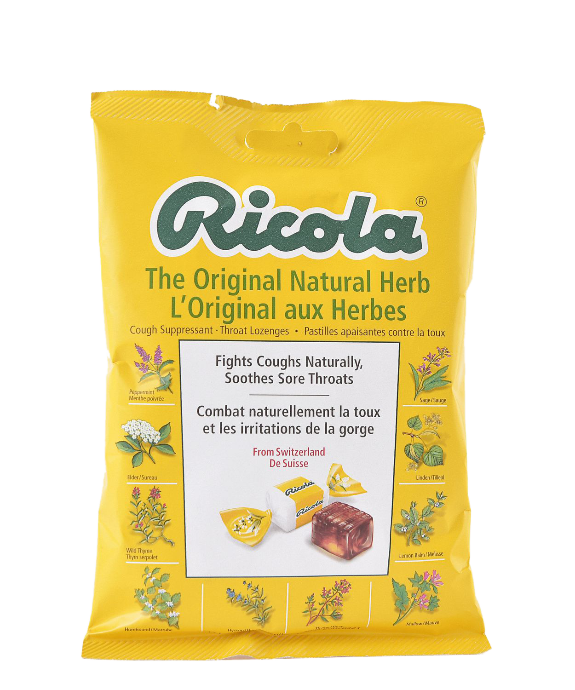
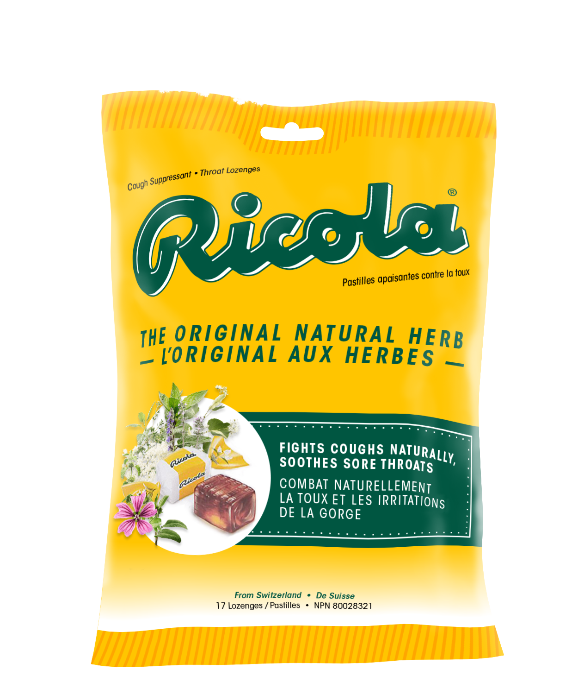

Ricola Redesign
Packaging Design, 2020
The task for this project is to redesign the packaging design of a non-food product. I chose to update the front face of Ricola's Original Natural Herb flavour as I determined that its outdated design creates a poor shelf presence compared to its competitors, and even its subbrands. Seen above is the current Ricola packaging besides a mockup of my redesign.
Current Design
My Redesign
Packaging Analysis
During my research, I found that the brand is memorable and that its bright yellow package can be spotted easily on a store shelf if it's by itself. However, the current packaging design lacks good hierarchy, typography, and is way too busy for its small size.
In general, the front face feels outdated. In comparison with a still from a 1997 Ricola commercial (seen below), we can see that the packaging design hasn’t changed much since.

Seen below is a picture of a shelf set containing various cough lozenges I took at a local Shoppers Drug Mart. Highlighted with a red circle is the Ricola flavour that I'm redesigning. As I mentioned earlier, this original flavour doesn't have a good shelf presence as it fades into the back due to its more eye-catching competitors, such as Buckley's and Halls.
Even its subbrands, which are placed all over this shelf, are designed better or differently and thus more eye-catching.
Ideation and Thumbnails
My thought process behind these sketches is to condense the information present on the front face and preserve the natural herbs’ presence as it's an integral part of the brand. I've employed the circle as a graphic element to replace the previous square layout as it's more fitting with the logo's curvy form. It also helps create a more open space for the typography. Regarding the logo, I hadn't changed it much in these sketches, but I worked to make it stand out and less flat.
These are the thumbnails; they are iterations designed on Adobe Illustrator based on in-class feedback and what I’ve established in my sketches. They are displayed in order of left-to-right and ending at the final redesign.